Chapter 20 Overlap in Observational Studies: Difficulties and Opportunities
100 Implications of overlap
In Part III of this book, causal inference with observational studies relies on two critical assumptions: ignorability
 |
and overlap
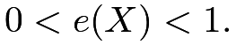 |
D’Amour et al., (2021) pointed out the tension between these two assumptions: typically, more covariates make the ignorability assumption more plausible (ignoring M-bias discussed in Chapter 84.1), but more covariates make the overlap assumption less plausible because the treatment becomes more predictable given more covariates.
If some units have
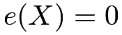
or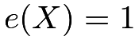
, then we have philosophic difficulty in thinking about the counterfactual potential outcomes (King and Zeng,, 2006). In particular, if a unit deterministically receives the treatment, then it may not be meaningful to conceive its potential outcome under the control; if a unit deterministically receives the control, then it may not be meaningful to conceive its potential outcome under the treatment. Even if the true propensity score is not exactly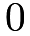
or , the estimated propensity score can be very close to or in finite samples, which makes the estimators based on IPW numerically unstable.
I have discussed this issue in Chapter 11.
, the estimated propensity score can be very close to or in finite samples, which makes the estimators based on IPW numerically unstable.
I have discussed this issue in Chapter 11.
Many statistical analyses in fact require a strict version of overlap:
Assumption 20.1 (strict overlap)
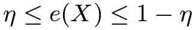
for some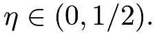
However, D’Amour et al., (2021, Corollary 1) showed that Assumption 20.1 has very strong implications when the number of covariates is large. For simplicity, I present only one of their results. Let
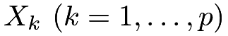
be the th component of the covariate
th component of the covariate 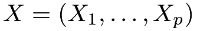
, and |
be the proportion of the treated units.
Theorem 20.1
Assumption 20.1 implies that 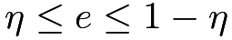
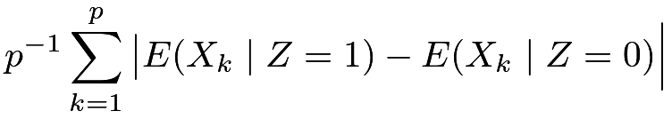 |
(92) | ||||
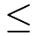 |
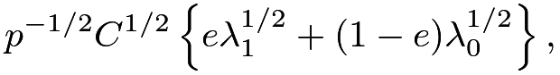 |
where
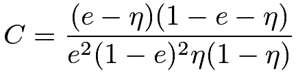 |
is a positive constant depending only on 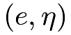 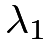 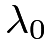 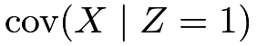 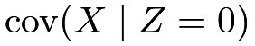
What is the order of the maximum eigenvalues in Theorem 20.1? D’Amour et al., (2021) showed that it is usually smaller than
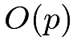
unless the components of are highly correlated. If the components of are highly correlated, then some components are redundant after including other components. If the components of are not highly correlated, then the right-hand side converges to zero. So the average difference in means of the covariates is close to zero, that is, the treatment and control groups are nearly balanced in means averaged over all dimensions of the covariates. Mathematically, the left-hand side of (92) converging to zero rules out the possibility that all dimensions of have non-vanishing differences in means across the treatment and control groups.
It is a strong requirement in observational studies with many covariates.
are highly correlated. If the components of are highly correlated, then some components are redundant after including other components. If the components of are not highly correlated, then the right-hand side converges to zero. So the average difference in means of the covariates is close to zero, that is, the treatment and control groups are nearly balanced in means averaged over all dimensions of the covariates. Mathematically, the left-hand side of (92) converging to zero rules out the possibility that all dimensions of have non-vanishing differences in means across the treatment and control groups.
It is a strong requirement in observational studies with many covariates.
100.1 Trimming in the presence of limited overlap
When Assumption 20.1 does not hold, it is common to trim the units based on the estimated propensity scores (Crump et al.,, 2009; Yang and Ding, 2018b, ). Trimming drops units within regions of little overlap, which changes the population and estimand. The restrictive implications of overlap in Assumption 20.1 suggest that trimming must be employed more often and one may need to trim a large proportion of units to achieve desirable overlap in high dimensions.
100.2 Outcome modeling in the presence of limited overlap
The somewhat negative results in D’Amour et al., (2021) also highlight the limitation of focusing only on the propensity score in the presence of limited overlap. This in some sense challenges Rubin, (2008)’s view that “for objective causal inference, design trumps analysis.” Rubin, (2008) argued strongly for the role of the “design” stage in observational studies. The “design” stage focuses on the propensity score which may not satisfy the overlap condition with many covariates.
With high dimensional covariates, outcome modeling becomes more important. In particular, if the outcome means only depend on a function of the original covariates in that
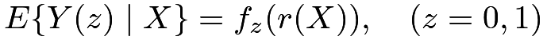 |
then it suffices to control for
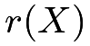
, a lower-dimensional summary of the original covariates. See Problem 20.1 for more details. Due to the dimension reduction, the strict overlap condition on can be much weaker than the strict overlap condition on. This is conceptually straightforward, but the corresponding theory and methods are missing.
101 Causal inference with no overlap: regression discontinuity
Let us start from the simple case with a univariate .
An extreme treatment assignment mechanism is a deterministic one:
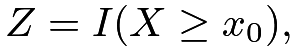 |
where
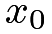
is a predetermined threshold. An interesting consequence of this assignment is that the ignorability assumption holds automatically: |
because  is a deterministic function of and a constant is independent of any random variables. However, the overlap assumption is violated by definition:
is a deterministic function of and a constant is independent of any random variables. However, the overlap assumption is violated by definition:
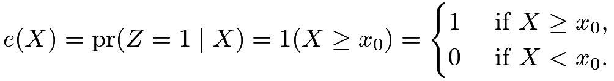 |
So our analytic strategies discussed in Part IV are no longer applicable here. We must change our perspective.
The discussion above seems contrived, with a deterministic treatment assignment. Interestingly, it has many applications in practice and is called regression discontinuity. Below, I first review some canonical examples and then give a mathematical formulation of this type of study.
101.1 Examples and graphical diagnostics
Example 20.1
Thistlethwaite and Campbell, (1960) first proposed the idea of regression-discontinuity analysis. Their motivating example was to study the effect of students’ winning the Certificate of Merit on later career plans, where the Certificate of Merit was determined by whether the Scholarship Qualifying Test score was above a certain threshold. Their initial analysis was mainly graphical. Figure 26 shows one of their graphs.
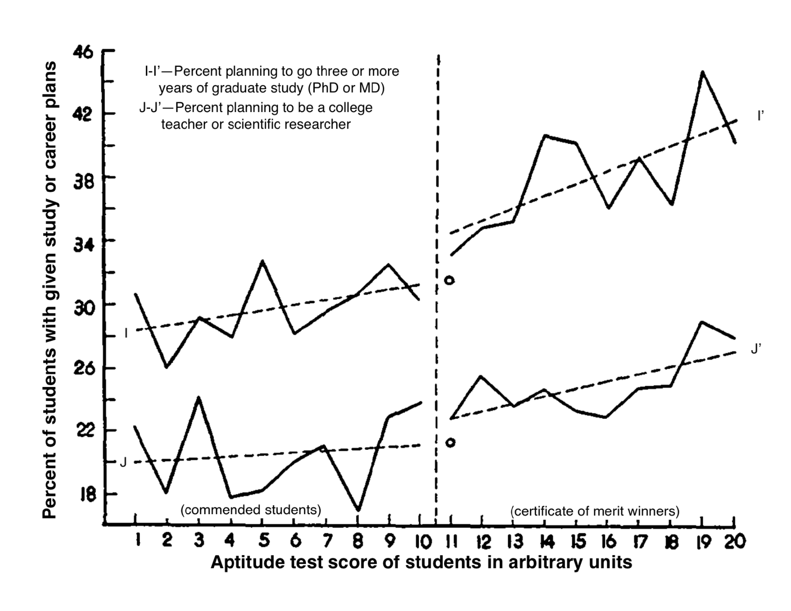
Example 20.2
Bor et al., (2014) used regression discontinuity to study the effect of when to start HIV patients with antiretroviral on their mortality, where the treatment is determined by whether the patients’ CD4 counts were below 200 cells/ 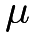
Example 20.3
Carpenter and Dobkin, (2009) studied the effect of alcohol consumption on mortality, which leverages the minimum legal drinking age as a discontinuity for alcohol consumption. They derived mortality data from the National Center for Health Statistics, including the decedent’s date of birth and date of death. They computed the age profile of deaths per 100,000 person-years with outcomes measured by the following nine variables: all all deaths, the sum of internal and external internal deaths due to internal causes external deaths due to external causes, the sum of the rest homicide homicides suicide suicides mva motor vehicle accidents alcohol deaths with a mention of alcohol drugs deaths with a mention of drug use externalother deaths due to other external causes
Figure 27 plots the number of deaths per 100,000 person-years for nine measures based on the data used by Angrist and Pischke, (2014). From the jumps at age 21, it seems obvious that there is an increase in mortality at age 21, primarily due to motor vehicle accidents. I leave the formal analysis as Problem 20.4.
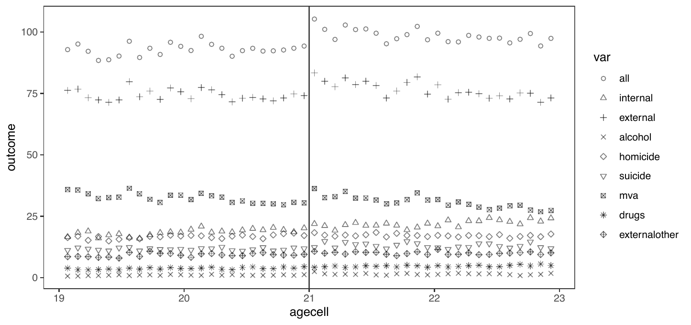
101.2 A mathematical formulation of regression discontinuity
The technical term for the variable that determines the treatment is the running variable.
Intuitively, regression discontinuity can identify a local average causal effect at the cutoff point :
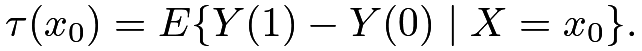 |
In particular, for the potential outcome under treatment, we have
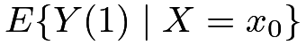 |
 |
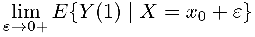 |
(93) | ||
|
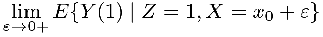 |
(94) | |||
|
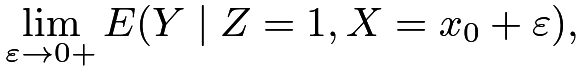 |
(95) |
where (93) holds if
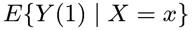
is continuous from the right at and (94) follows by the definition of. Similarly, for the potential outcome under control, we have
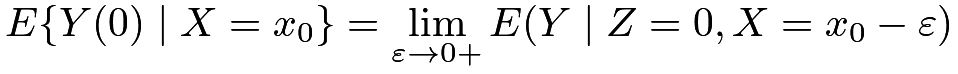 |
if
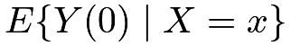
is continuous from the left at . So the local average causal effect at can be identified by the difference of the two limits. I summarize the key identification result below.Theorem 20.2
Assume that the treatment is determined by 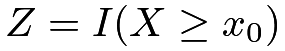 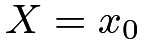
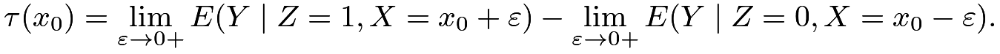 |
Since the right-hand side of the above equation only involves observables, the parameter
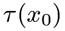
is nonparametrically identified. However, the form of the identification formula is totally different from what we derived before. In particular, the identification formula involves limits of two conditional expectation functions.101.3 Regressions near the boundary
If we are lucky, graphical diagnostics sometimes can clearly show the causal effect at the cutoff point. However, many outcomes are noisy so graphical diagnostics are not enough in finite samples. Figure 28 shows two simulated examples with obvious jumps at the cutoff point and two examples without obvious jumps, although the underlying data-generating processes all have discontinuities.
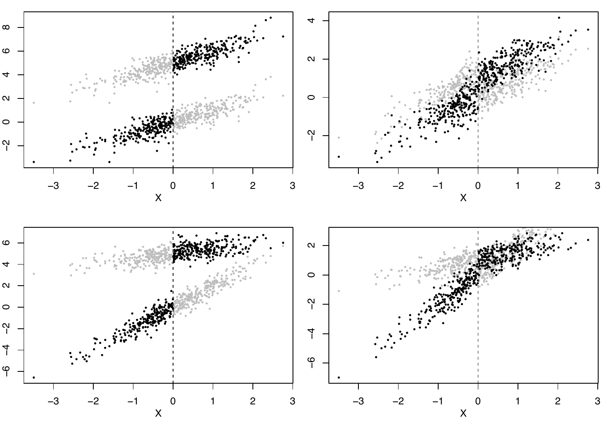
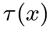
; in the second row, varies with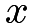
.Assume that
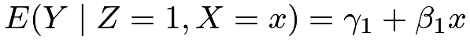
and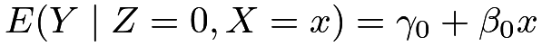
are linear in . We can run OLS based on the treated and control data to obtain the fitted lines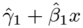
and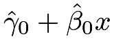
, respectively. We can then estimate the average causal effect at the point as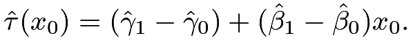 |
Numerically,
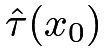
is identical to the coefficient of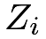
in the OLS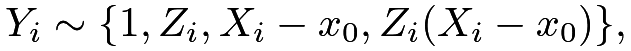 |
(96) |
and it is also identical to the coefficient of in the OLS
| (97) |
where
indicate the right and left parts of , respectively. I leave the algebraic details to Problem 20.2.
However, this approach may be sensitive to the violation of the linear model assumption. Theory suggests running regression using only the local observations near the cutoff point43. However, the rules for choosing the “local points” are quite involved. Fortunately, the rdrobust function in the rdrobust package in R implements various choices of “local points.” Since choosing the “local points” is the key to regression discontinuity, it seems more sensible to report estimates and confidence intervals based on various choices of the “local points.” This can be viewed as a sensitivity analysis for regression discontinuity.
101.4 An example
Lee, (2008) gave a famous example of using regression discontinuity to study the incumbency advantage in the U.S. House. He wrote that “incumbents are, by definition, those politicians who were successful in the previous election. If what makes them successful is somewhat persistent over time, they should be expected to be somewhat more successful when running for re-election.” Therefore, this is a fundamentally challenging causal inference problem. The regression discontinuity is a clever study design to study this problem.
The running variable is the lagged vote in the previous election centered at , and the outcome is the vote in the current election, with units being the congressional districts. The treatment is the binary indicator for being the current incumbent party in a district, determined by the lagged vote. The following R code generates Figure 29 that shows the raw data.
The rdrobust function gives three sets of the point estimate and confidence intervals. They all suggest a positive incumbency advantage.
We can also obtain the point estimates and the confidence intervals based on OLS with different choices of the local points defined by based on the following R code.
Figure 30 shows the point estimates and the confidence intervals as a function of . While the point estimates and the confidence intervals are sensitive to the choice of , the qualitative result remains the same as above.
101.5 Problems of regression discontinuity
What can go wrong with the regression discontinuity analysis? The technical challenge is to specify the neighborhood near the cutoff point. We have discussed this issue above.
In addition, Theorem 20.2 holds under a continuity condition. It may be violated in practice. For instance, if the mortality rate jumps at the age of 21, then we may not be able to attribute the jumps in Figure 27 to the change in drinking behavior due to the legal drinking age. However, it is hard to check the violation of the continuity condition empirically.
McCrary, (2008) proposed an indirect test for the validity of the regression discontinuity. He suggested checking the density of the running variable at the cutoff point. The discontinuity in the density of the running variable at the cutoff point may suggest that some units were able to manipulate their treatment status perfectly. The DCdensity function in the R package rdd implements this test. I omit the details.
102 Homework Problems
20.1 A theorem for the role of outcome modeling in the presence of limited overlap
This problem extends the discussion in Section 100.2. I state a formal theorem below.
Theorem 20.3
Assume
and
for some function .
The average causal effect  can be identified by
can be identified by
or
where .
Prove Theorem 20.3.
 fails whereas the overlap condition on may still hold.
fails whereas the overlap condition on may still hold.20.2 Linear potential outcome models
This problem gives more details for the numerical equivalence in Section 101.3.
Remark: It is helpful to start with the figures of , , and with on the x-axis. The conclusion holds by a reparametrization of the OLS regressions.
20.3 Simulation for regression discontinuity
In Figure 28, the potential outcomes are simulated from linear models. Change them to nonlinear models, and compare different point estimators and confidence intervals, including the biases and variances of the point estimators, and the coverage properties of confidence intervals.
20.4 Re-analysis of the data on the minimum legal drinking age
Figure 27 shows the jumps at the cutoff point. Analyze the data mlda.csv of Carpenter and Dobkin, (2009).
20.5 Re-analysis of Lee, (2008)’s data
Figure 30 plots the confidence intervals based on the standard errors assuming homoskedasticity. Generate a figure with confidence intervals based on the EHW standard errors in OLS.
20.6 Recommended reading
D’Amour et al., (2021) discussed the implications of overlap with high dimensional covariates.
Thistlethwaite and Campbell, (1960)’s original paper on regression discontinuity was re-printed as Thistlewaite and Campbell, (2016) with many insightful comments. Coincidentally, Thistlethwaite and Campbell, (1960) and Rubin, (1974) were both published in the Journal of Educational Psychology.
脚注
43. This is called local linear regression in nonparametric statistics, which belongs to a broader class of local polynomial regression (Fan and Gijbels,, 1996).